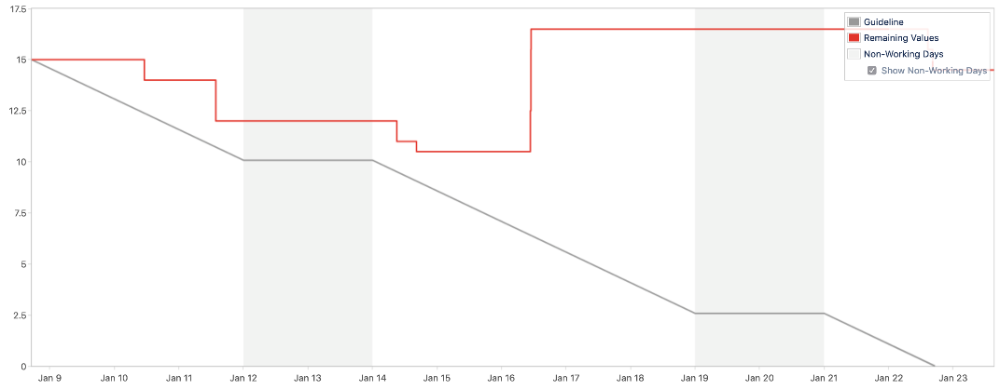

Debugging the Delivery of a Team (3/4)
Debugging the Delivery of a Team (3/4)
An articles series on troubleshooting a team struggling to ship.
Previous episodes
In previous blogs we set the context (struggling to ship software) and our first steps into improving it.
This is where we left our team. After the previous changes in our ways of working, our sprints started to look a bit healthier.. in the first half at least.

Hitting the wall.
The above chart exhibits a common pattern that appears when all the tasks in a sprint are blocked. When this happens, engineers will start to to pull new tasks in the sprint in order to stay utilised.
While this is done with the best intentions, the net result is that less work gets done! The work started at the beginning of the sprint is abandoned, the work started half way trough the sprint will likely not be completed on time.
Dealing with dependencies
A blocked task is basically a unit of work with unsatisfied dependencies. Now, while it would be great to remove all the dependencies between tasks, reality tells us this is seldom feasible: no software exists in a vacuum, everything we do depends on something else!
Looking for another way to mitigate this problem, we approached the problem as a timing issue. We decided that the logical thing to do would be to anticipate the blocking task(s), and address them in the sprint before from the blocked task(s).
While this might all seem quite plain and obvious, you need to remember that we are operating with a "just in time" sprint backlog. To properly manage blocked tasks, we had to be scientific about it.
Rolling wave
If we want to address blocking tasks in the sprint before the blocked tasks, we obviously need to have an horizon of at least two sprints. To achieve this we changed our "just in time" backlog creation process to address the next-next sprint (we call it the horizon sprint) instead of the next sprint.
This enabled us to anticipate and address blockers in enough time. If any task in the horizon backlog blocks another, we could move it to the next sprint and solve it before it became a problem.
The concept behind this is called rolling wave planning, and is used in project management to do adaptive planning for project milestones.
In order to address the blockers, we need to find them first. To make it easier, we made it explicit that, when creating the backlog, it was also required to create a graph describing the blocking/blocker relationships in the sprint.
The result looks something like this:
A note on iteration length
One thing you probably noticed is that we moved to a sprint length of two weeks. This was done in the spirit of removing a bit of tension from the system: longer iterations are more forgiving than short one.
Where we landed
As with most of the systems, solving a problem will surface another and the further you go in optimising them, the harder the problems become.
Good, but still not good enough.. in the next blog we will iterate once more and tweak the team a bit more.
Disclaimer
I know that burndown charts have a bad reputation and I don't want to suggest that they are the be-all end-all of team efficiency. I do think they are a useful metric that can be used to explore how much a team is able to focus and understands its own capacity.
This content is based on a previous article published on October 2, 2019.